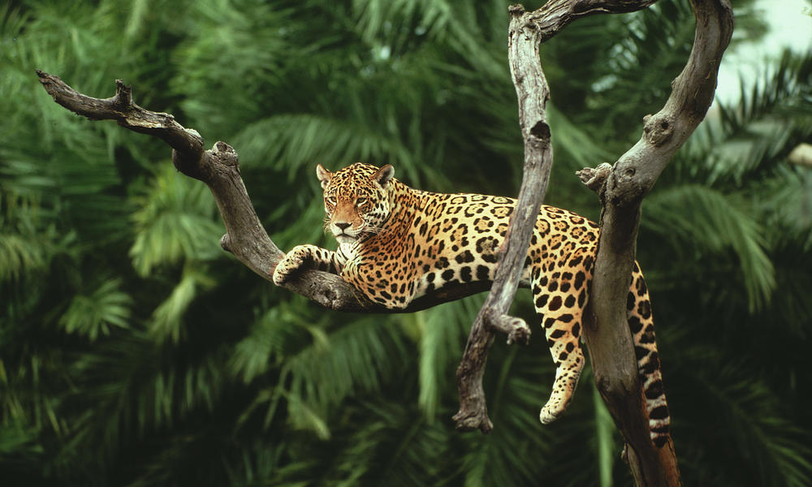

The Wild Life is great
Wild Life includes all non-domesticated plants, animals and other organisms.
Wildlife can be found in all ecosystems. Deserts, forests, rain forests, plains, grasslands, and other areas including the most developed urban sites, all have distinct forms of wildlife.
Destruction
Exploitation of wild populations has been a characteristic of modern man since our exodus from Africa 130,000 – 70,000 years ago. The rate of extinctions of entire species of plants and animals across the planet has been so high in the last few hundred years it is widely believed that we are in the sixth great extinction event on this planet
Food, pets, and traditional medicines
Anthropologists believe that the Stone Age people and hunter-gatherers relied on wildlife, both plants and animals, for their food. In fact, some species may have been hunted to extinction by early human hunters.